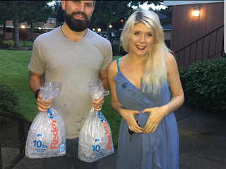
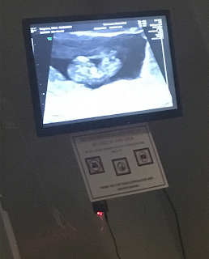

Loss
Nine weeks and three days
To the women who have lost their baby, I grieve with you and it’s not your fault. You will get to hold your sweet baby in Heaven one day.



I have always felt something was missing after losing my baby a couple years ago; which was being a family. I knew God would make me a mother someday. Seeing women pregnant with a cute belly made me sad. I wanted to experience another life inside me again.
I was super embarrassed to tell people my baby had passed because ‘Facebook’ already knew and so did our families. I did not want to say the word miscarriage, it was awkward. Yet so many women have them.
I went to my 12-week ultrasound on a sizzling summer day excited to see and hear my baby’s heartbeat. Not knowing much about miscarriages, I looked at my baby dead on the screen with no heart beat at the early age of 9 weeks and 3 days. He had not grown at all since then. I couldn’t believe it. I was carrying my baby for over 3 weeks without my body giving me any miscarriage signs.
The doctor gave me options to release my baby, but I refused. I wanted to see if he would come out on his own even though the fetus might not expel all the tissue, the doctor told me. A week went by, still no signs of a miscarriage. So, I ended up having intermediate intervention which was very difficult.
To the women who have lost their baby, I grieve with you and it’s not your fault. You will get to hold your sweet baby in Heaven one day.